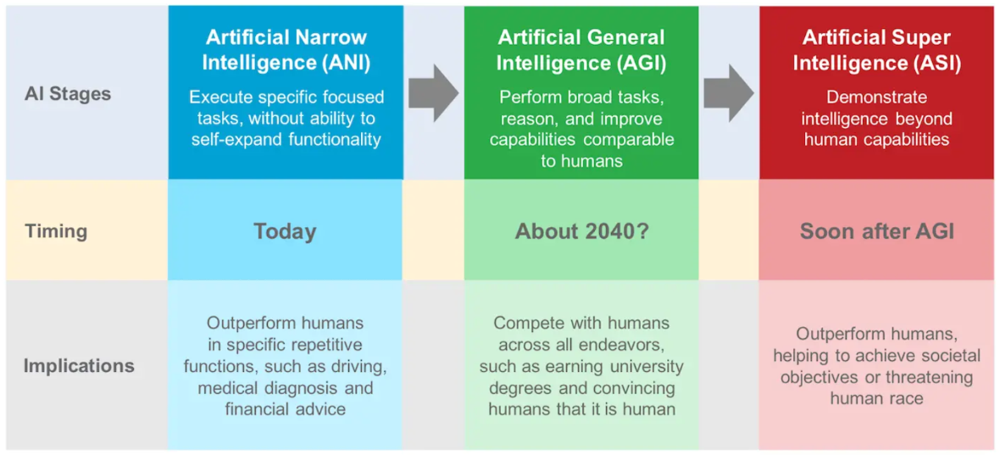

What is AI?
Artificial Intelligence (AI) is a science devoted to making machines think and act like humans.
Basic Knowledge
History of AI
The 3 Stages of AI

Types and Applications
1. Discriminant AI <=> Judgment
Data Analysis, BI (Analysis/Prediction), Artificial Vision, CV, NLP (BERT/GPT)...
2. Generative AI <=> Creativity
QA : What is the future of AI?
Let's get on with it, Next ...
* enjoy it ;)Use a spacebar or arrow keys to navigate